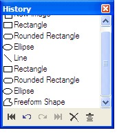
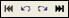
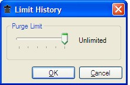

History Window
 The action list displays all¤ changes made to the canvas and presents them in the order in which they transpired. The most recent action appears at the bottom of the action list. Actions may be interactively rolled back or replayed by clicking the desired action. ¤Older actions in the action list may be automatically purged. See purge limit below. The action toolbar has four buttons for rolling back or replaying actions (either as individual actions or as an aggregate) and two buttons for controlling action list behavior.
 The four buttons for rolling back and replaying actions are undo, redo, undo all, and redo all.
The two buttons for controlling action list behavior are clear history and limit history.
Limit history causes the oldest actions to be purged or truncation of the current action list to the size specified by the purge limit.
 The purge limit may be configured by clicking on the Limit History button and interacting with the slider in the Limit History dialog. As an example, if 25 actions are listed in the action list and the purge limit is reconfigured for 10 actions, the oldest 15 actions in the action list will be purged. With the purge limit configured for 10 actions and 10 actions listed in the action list, a subsequent change to the canvas will purge the oldest action from the action list and append the new action to the bottom. Any actions in the action list that fall above the purge limit will be replayed prior to truncation of the action list via the Limit History dialog.
|